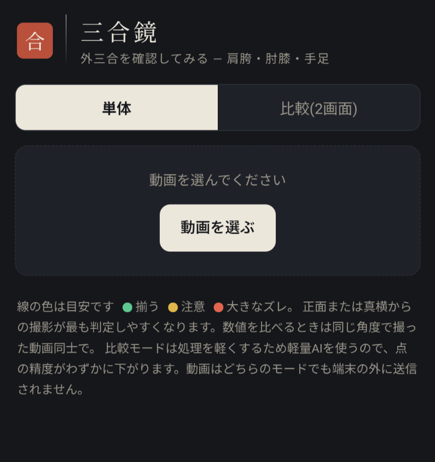
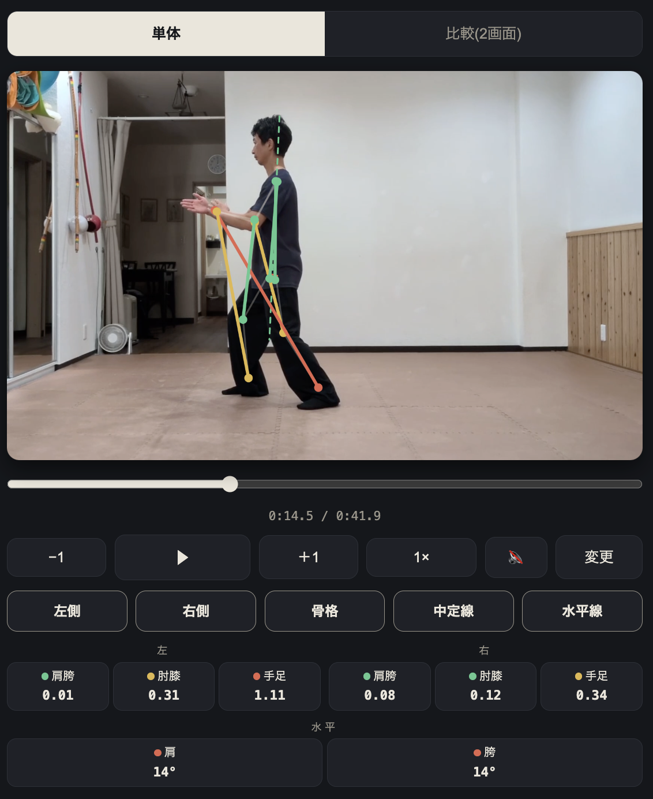
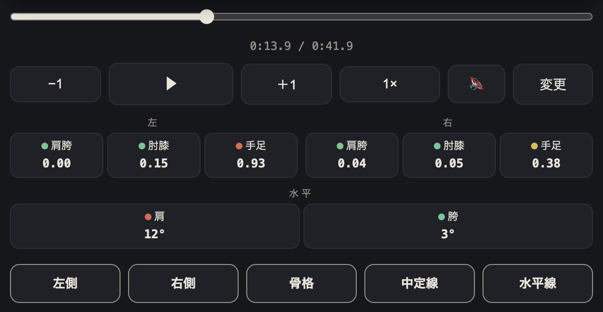
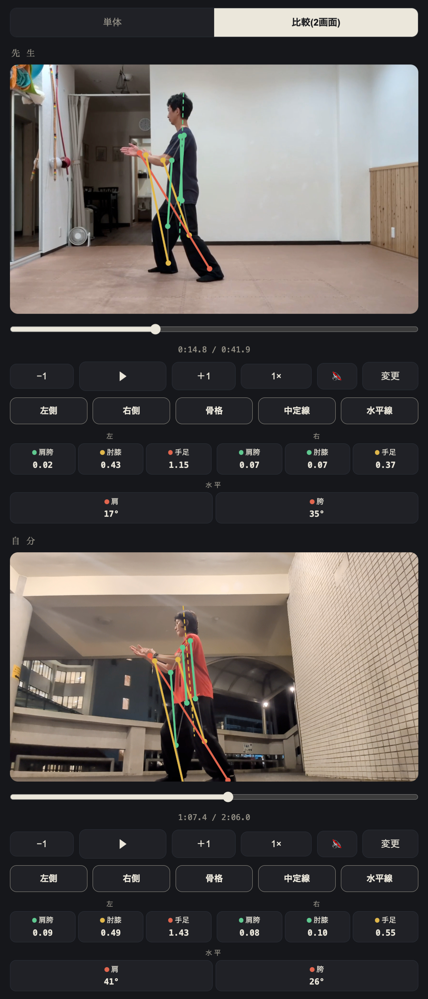
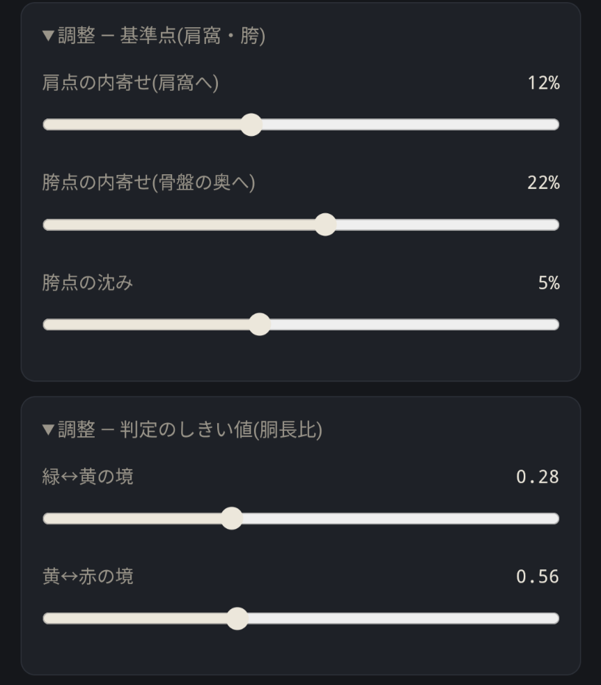

スマホで撮った套路の動画に、AIが外三合の線を重ねて映す鏡です。アプリのインストールは不要、ブラウザで開くだけ。動画はスマホの外に送信されません。無料です。
共有されたURLをスマホのブラウザ(SafariやChrome)で開き、「練習動画を選ぶ」から套路を撮った動画を選びます。初回だけAIの読み込みに数秒かかります。よく使うなら「ホーム画面に追加」しておくとアプリのように開けます。

動画の上に重なる色付きの線が外三合の三つのペアです。肩胯(肩窩と股関節の奥)、肘膝、手足。それぞれ左右にあります。点線の中定線(肩の中点と胯の中点を結んだ垂線)は立身中正の縦の目安、そして水平線は肩・胯それぞれの左右を結んだ線で、体の左右の傾き(横方向の中定)を見ます。
色の意味: 緑=揃っている 黄=注意 赤=大きなズレ。

動画の下のカードは補助の数値です。外三合のペア(肩胯・肘膝・手足)は、2点が左右方向にどれだけ離れているかを自分の胴の長さに対する割合で表します(0.30なら胴の3割ぶん)。「水平」の肩・胯は、水平線が水平からどれだけ傾いているかを角度(°)で表します。判断は基本ラインの色で、数値は目安として見てください。
操作系は動画のすぐ下に一列にまとまっています。シークバーで場面を移動、▶で再生/停止、−1 ＋1でコマ送り。1×を押すと速度メニュー(0.5× / 0.25×)が開きます。鏡では絶対に見えない「弓歩から後坐へ移る一瞬」を止めて観察できるのが強みです。その下のボタン(左側・右側・骨格・中定線・水平線)で、線の表示を個別にオンオフできます。

上部の「比較(2画面)」タブで、二つの動画を縦に並べられます。先生の動画と自分の動画をそれぞれ読み込み、それぞれ独立にコマ送りして同じ姿勢で止めて、線の色と数値を見比べます。

調整は2つに分かれています。「基準点(肩窩・胯)」は肩窩・胯の位置合わせの3本。おすすめの手順: 正面から水平に撮った動画で、自分の感覚で確かに坐胯できているコマを止めて表示し、点が身体感覚の場所と重なるまで動かします。設定は自分の端末に保存されます。
「判定のしきい値(胴長比)」は色の境目の2本。単体モードでは動画が画面上部に貼り付いたまま残るので、スライダーを動かすと線の色がその場で変わるのを見ながら調整できます。ここが皆さんの出番——実際の套路で「この場面は緑であってほしい/これは黄だろう」という感覚に合う値を探して、ぜひ教えてください。集まった値がこの道具の物差しを育てます。

全身(足先から頭まで)が常に画面に入るように。明るい場所で、服と背景の色が違うほど点が安定します。正面から撮ると左右の揃い・中定線・水平線が読みやすく、真横から撮ると肘膝の前後の対応が読みやすくなります。水平線(肩・胯の傾き)は正面/背面から撮ったときだけ意味を持ちます——真横だと肩や胯が前後に重なって数値が不安定になるので注意。数値を比べるときは、同じ角度で撮った動画同士で。
AIの点は映像からの推定であり、映すのは体の外側(外三合と功架)だけです。内三合——心と意、意と気、気と力の連動——はカメラには映りません。線が全部緑でも、それが太極拳として正しいかどうかを決めるのは、この鏡ではなく老師と稽古です。道具は道具として、気楽に使ってください。